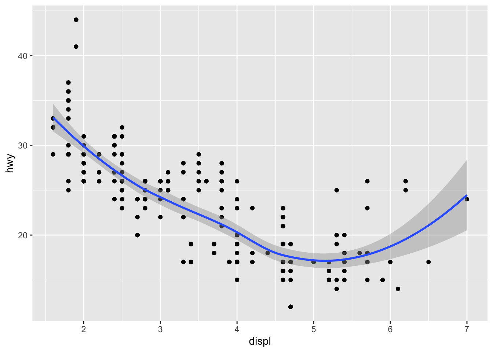
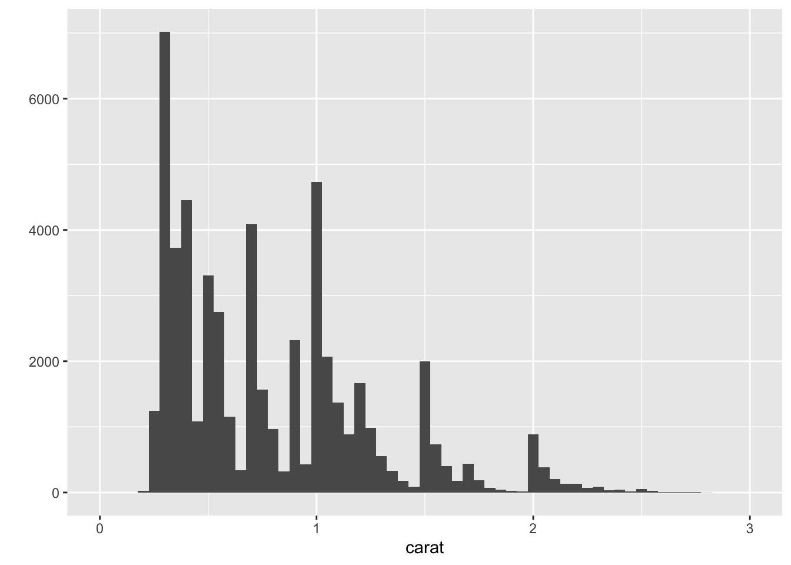
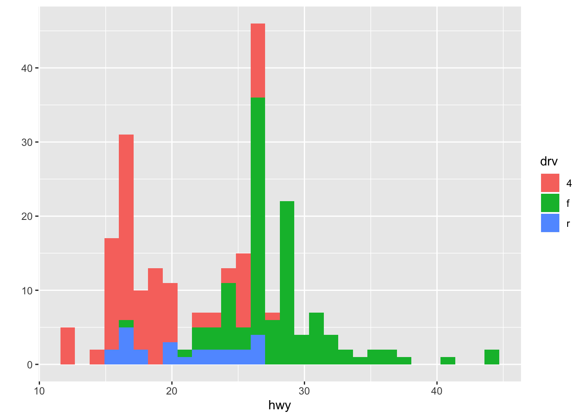
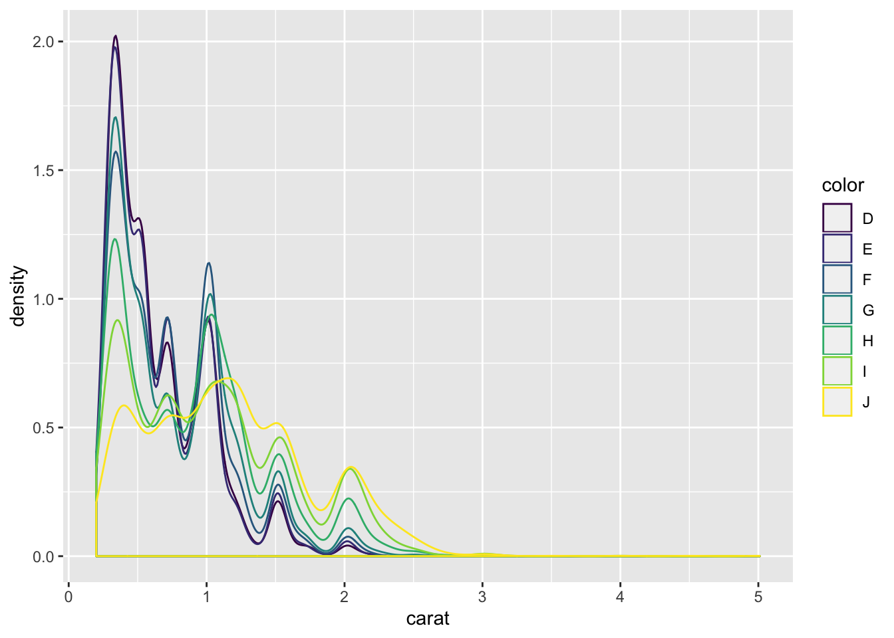
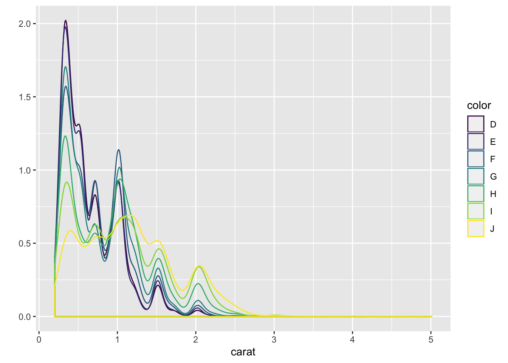
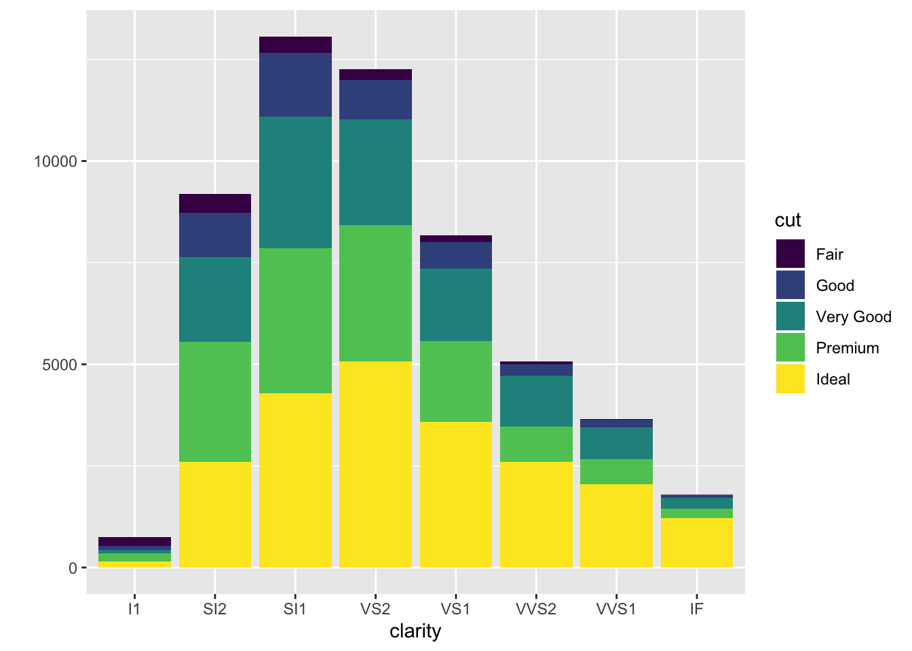
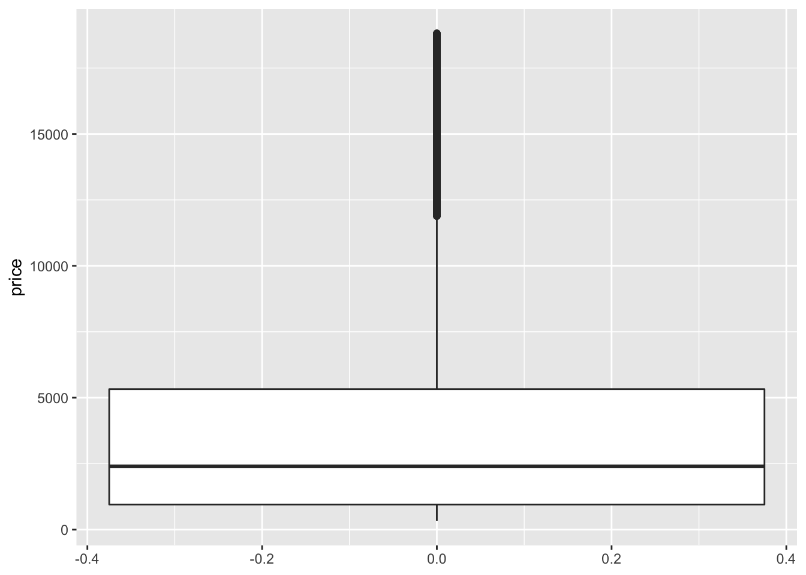
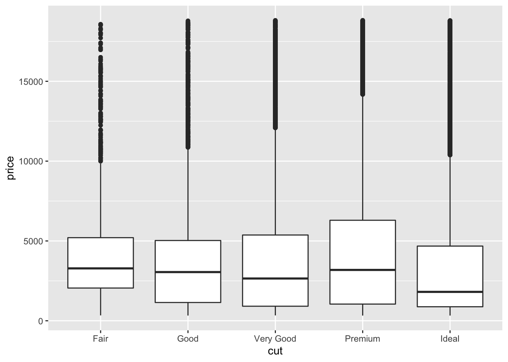

Chapter 3 Descriptive Statistics
3.1 R functions for descriptive statistics
# compute mean
# we use $ to access `price` variable in the `diamonds` dataset
mean(diamonds$price)## [1] 3932.8# compute median
median(diamonds$price)## [1] 2401# compute variance
var(diamonds$price)## [1] 15915629# compute standard deviation
sd(diamonds$price)## [1] 3989.44# summary of a data frame
summary(diamonds)## carat cut color clarity
## Min. :0.2000 Fair : 1610 D: 6775 SI1 :13065
## 1st Qu.:0.4000 Good : 4906 E: 9797 VS2 :12258
## Median :0.7000 Very Good:12082 F: 9542 SI2 : 9194
## Mean :0.7979 Premium :13791 G:11292 VS1 : 8171
## 3rd Qu.:1.0400 Ideal :21551 H: 8304 VVS2 : 5066
## Max. :5.0100 I: 5422 VVS1 : 3655
## J: 2808 (Other): 2531
## depth table price x
## Min. :43.00 Min. :43.00 Min. : 326 Min. : 0.000
## 1st Qu.:61.00 1st Qu.:56.00 1st Qu.: 950 1st Qu.: 4.710
## Median :61.80 Median :57.00 Median : 2401 Median : 5.700
## Mean :61.75 Mean :57.46 Mean : 3933 Mean : 5.731
## 3rd Qu.:62.50 3rd Qu.:59.00 3rd Qu.: 5324 3rd Qu.: 6.540
## Max. :79.00 Max. :95.00 Max. :18823 Max. :10.740
##
## y z
## Min. : 0.000 Min. : 0.000
## 1st Qu.: 4.720 1st Qu.: 2.910
## Median : 5.710 Median : 3.530
## Mean : 5.735 Mean : 3.539
## 3rd Qu.: 6.540 3rd Qu.: 4.040
## Max. :58.900 Max. :31.800
## 3.2 qplot()
qplot(), short for quick plot is a function in the ggplot2 package. qplot makes it easy to produce complex plots, often requiring several lines of code using other plotting systems, in one line.
3.3 Scatterplots
ggplot(data = mpg, aes(x = displ, y = hwy)) + geom_point()
qplot(displ, hwy, data = mpg)
ggplot(data = mpg, aes(x = displ, y = hwy, color = class)) + geom_point()
qplot(displ, hwy, data = mpg, color = class)
ggplot(data = mpg, aes(x = displ, y = hwy, color = class, shape = drv)) + geom_point()
qplot(displ, hwy, data = mpg, color = class, shape = drv)
ggplot(data = mpg, aes(x = displ, y = hwy)) + geom_point() + geom_smooth(method = "lm")qplot(displ, hwy, data = mpg, geom = c("point", "smooth")) ## `geom_smooth()` using method = 'loess' and formula 'y ~ x'
3.4 Histogram
ggplot(data = diamonds, aes(x = carat)) + geom_histogram()## `stat_bin()` using `bins = 30`. Pick better value with `binwidth`.qplot(carat, data = diamonds, geom = "histogram")## `stat_bin()` using `bins = 30`. Pick better value with `binwidth`.
ggplot(data = diamonds, aes(x = carat)) + geom_histogram(binwidth = 0.05) + xlim(c(0,3))## Warning: Removed 32 rows containing non-finite values (stat_bin).## Warning: Removed 2 rows containing missing values (geom_bar).qplot(carat, data = diamonds, geom = "histogram", binwidth = 0.05, xlim = c(0,3))## Warning: Removed 32 rows containing non-finite values (stat_bin).## Warning: Removed 2 rows containing missing values (geom_bar).
ggplot(data = mpg, aes(x = hwy, fill = drv)) + geom_histogram() ## `stat_bin()` using `bins = 30`. Pick better value with `binwidth`.
qplot(hwy, data = mpg, geom = "histogram", fill = drv)## `stat_bin()` using `bins = 30`. Pick better value with `binwidth`.3.5 Density plots
ggplot(data = diamonds, aes(x = carat, color = color)) + geom_density() qplot(carat, data = diamonds, geom = "density", color = color)
3.6 Barplots
ggplot(data = diamonds, aes(x = clarity)) + geom_bar() qplot(clarity, data = diamonds, geom = "bar")
ggplot(data = diamonds, aes(x = clarity, fill = cut)) + geom_bar() 
qplot(clarity, data = diamonds, geom = "bar", fill = cut)
3.7 Boxplots
ggplot(data = diamonds, aes(y = price)) + geom_boxplot() 
qplot(y = price, data = diamonds, geom = "boxplot")
ggplot(data = diamonds, aes(x = cut, y = price)) + geom_boxplot() 3.8 Faceting
ggplot(data = diamonds, aes(x = carat, y = price)) + geom_point() + facet_grid(cut ~ color)
qplot(carat, price, data = diamonds, facets = cut ~ color)
3.9 The corrplot Package
- https://cran.r-project.org/web/packages/corrplot/vignettes/corrplot-intro.html
- “The corrplot package is a graphical display of a correlation matrix, confidence interval. It also contains some algorithms to do matrix reordering. In addition, corrplot is good at details, including choosing color, text labels, color labels, layout, etc.”
library(corrplot)## corrplot 0.84 loadedcorrplot.mixed(cor(mtcars))